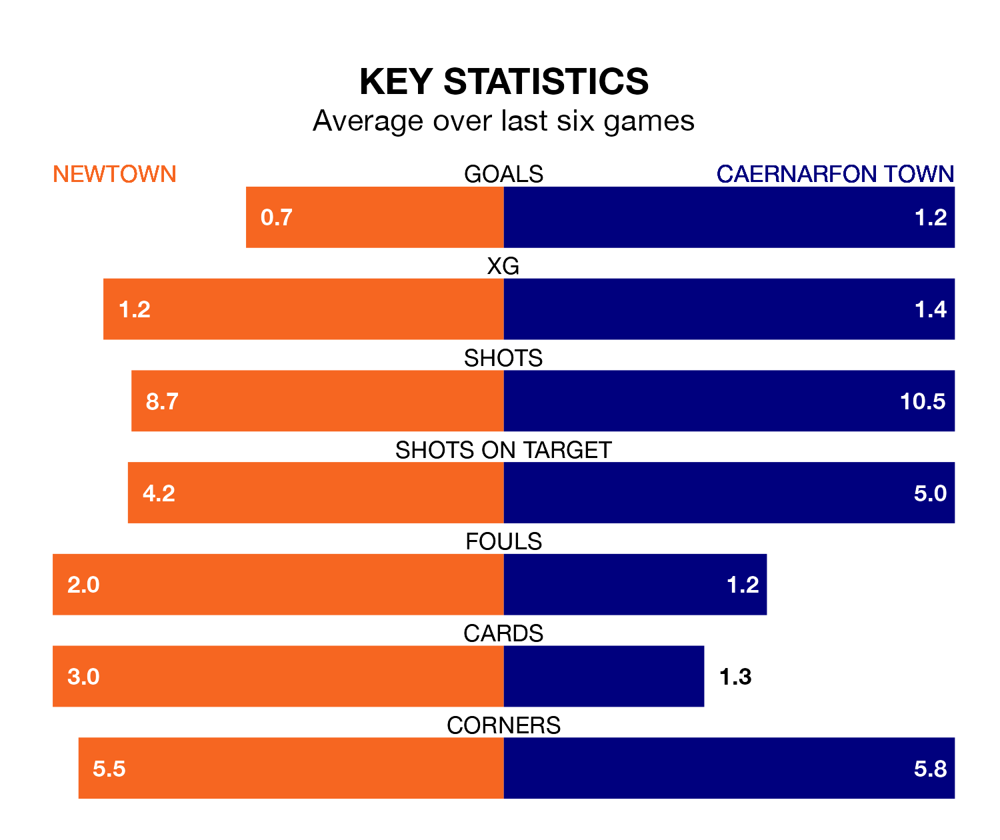

Relegation candidates Caernarfon Town face a challenge away against high-flying Newtown at G.F. Grigg Latham Park on Saturday.
Caernarfon Town are rooted to the bottom of the Welsh Premier League table, and have picked up 11 wins and seven draws in their 30 games to date.
The White Stars, meanwhile, are zero in the standings with 38 points, having won 11 and drawn five, and are 45 points behind table-toppers The New Saints.
With 50 goals in 30 games so far this season, Caernarfon are the league's third-highest scorers with 1.7 goals per game. But they are conceding more than average too, letting in 63 goals at a rate of 2.1 per game.
Newtown, meanwhile, are below average scorers, with 1.4 goals per game, compared to a league average of 1.5. They have conceded 1.5 goals per game.
In the last 10 years, Newtown and Caernarfon have played each other on 20 occasions. Newtown won 13 of them, Caernarfon six, and they drew once.
On average, the White Stars scored 2.2 goals and the Canaries 1.2 in those matches.
Their last meeting was on March 1, when Caernarfon won 1-0 at home.
The White Stars are in disappointing form in the Welsh Premier League, with one win and two draws from their last six games.
With two wins and a draw over that period, Town's form is slightly better – they have taken seven points from 18, compared to the home side's five.
Newtown's last match was on April 5, a 1-1 draw against Bala Town, with Louis Gabriel Robles getting the goal for the White Stars.
Caernarfon lost 7-1 against The New Saints last time out, also on April 5, with Louis LLoyd on the scoresheet.
Updated: 14:47 (UTC), 09/04/24